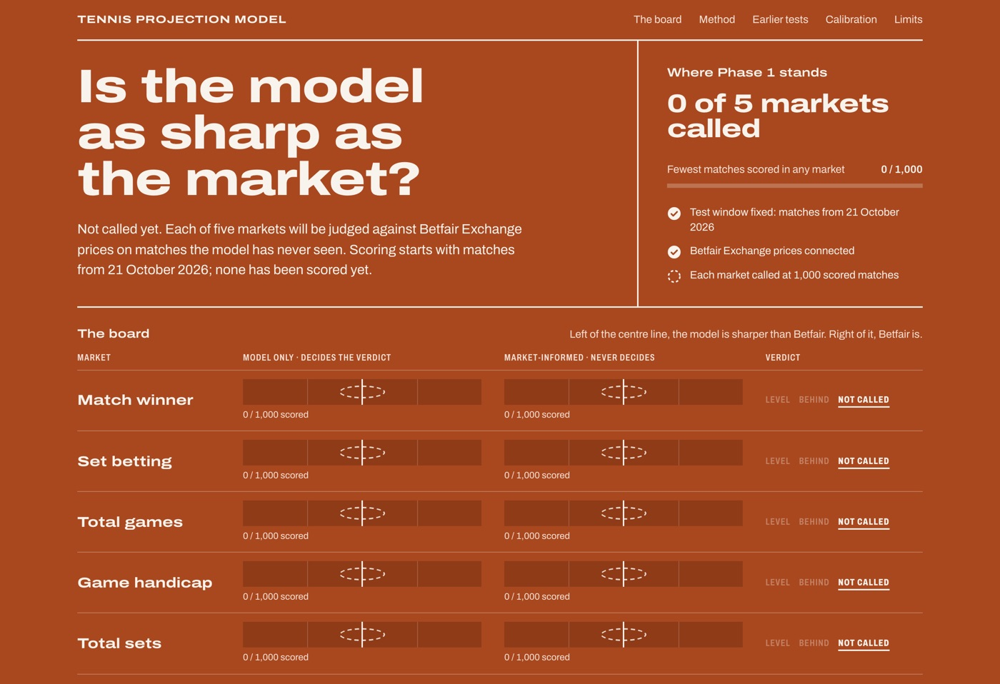
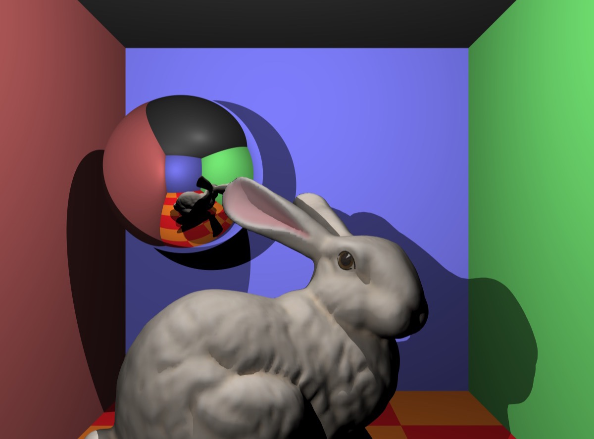
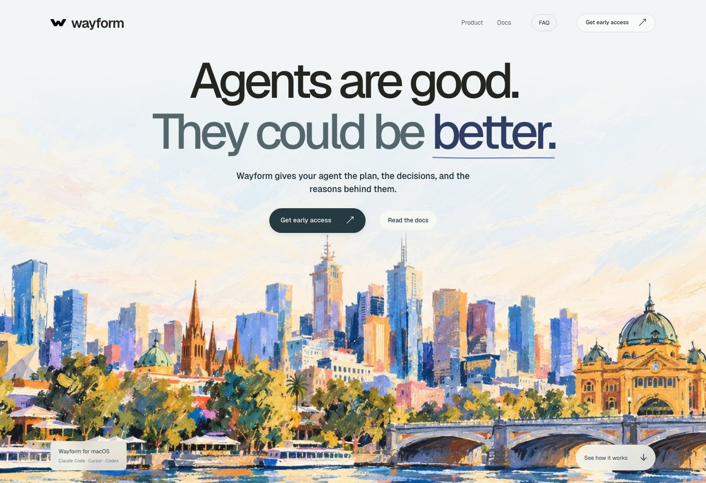

Order 01Machine learning

Tennis Match Projection Model
Predicts ATP match winners from form, surface and player stats.
- Python
- Pandas
- Scikit-Learn
Case studies from things I've built and broken.
Order 01Machine learning

Predicts ATP match winners from form, surface and player stats.
Order 02Mobile


Small real-world quests that get friends off their phones. Three awards at VicHack.
Order 03Graphics

Turns a 3D scene into a realistic image by following rays of light.
Order 04Developer tools

Shared memory for coding agents, so a team's decisions carry across tools.